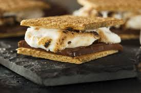

Marshmallow Smores

Total Time : 5 minutes
Ingredients
- Graham crackers
- 2 chocolate bars (milk chocolate or dark chocolate)
- marshmallows (standard size)
Directions
- Break the graham crackers along the scored line so you have 2 pieces.
- Place your marshmallow on the cracker and microwave for 30 seconds
- After done put chocolate bar on top of marshmallow and close it with the other piece
- Enjoy!
Click here for more information.